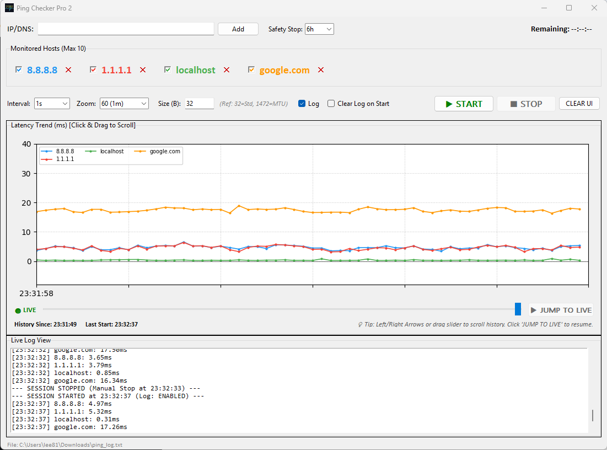
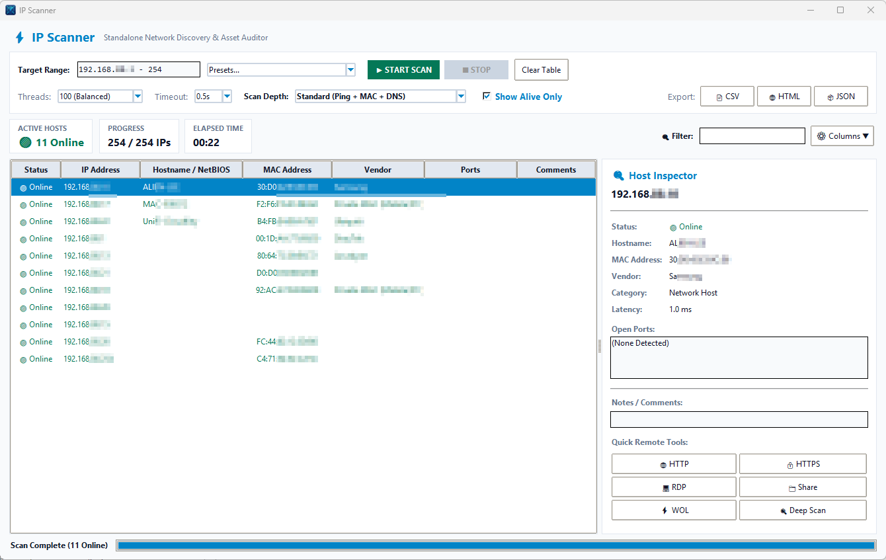

Two standalone, high-performance Windows applications designed for system administrators, IT specialists, and network engineers. Monitor latency stability with Ping Checker Pro 2 and discover local subnet infrastructure with IP Scanner Pro.
Continuous multi-target ICMP latency graphing with 7-day timeline scrubbing, custom packet payload sizes (32B – 1472B MTU), keyboard shortcuts, and asynchronous audit logging.

Track up to 10 IP addresses or domain names simultaneously with distinct color-coded trendlines and individual host visibility toggles.
Store up to 604,800 records in memory. Drag the full-width timeline slider left to enter ⏸ PAUSED mode and inspect historical spikes.
Nudge timeline point-by-point with Left/Right Arrow keys or hold Shift + Arrow for 10x fast rewind/forward.
Non-blocking background thread writes timestamped logs to ping_log.txt without UI lag. Features dual timestamps (History Since & Last Start).
Fast multi-threaded network scanner that parses local subnets, resolves MAC addresses & IEEE OUI hardware vendors, detects open ports/services, and exports audit reports.
Auto-detects active local subnet ranges (e.g. 192.168.1.0/24, 192.168.88.1-254) or custom IP lists with high-speed parallel worker threads.
Uses Win32 SendARP API and ARP cache lookups to resolve MAC addresses and identify manufacturers (Apple, Cisco, Ubiquiti, Synology, Raspberry Pi, etc.).
Scans common operational ports (HTTP, HTTPS, SSH, RDP, SMB, VNC, SNMP, Printer) and automatically categorizes active network hardware.
Launch 1-click web connections, SSH sessions, or RDP directly from discovered IP rows. Export complete inventory tables to CSV or JSON.

Combine both tools for complete network discovery, baseline auditing, and continuous quality monitoring.
Run a quick subnet scan to discover all online devices, identify rogue IPs, query MAC vendors, and uncover open management ports.
Add critical infrastructure IPs (routers, access points, gateways, servers) to Ping Checker Pro 2 for continuous 7-day latency tracking and drop alerts.
Compare technical capabilities and core features across both diagnostic tools.
| Capability / Feature | Ping Checker Pro 2 | IP Scanner Pro |
|---|---|---|
| Primary Function | Continuous ICMP Latency & Drop Monitoring | Multi-Threaded Subnet & Device Discovery |
| Target Capacity | Up to 10 Hosts (Parallel Graphing) | Full Subnets (e.g. /24, 254+ IPs) |
| Timeline History | 7 Days (604,800 Points In-Memory) | Snapshot Scan Results Table |
| Hardware Vendor Lookup | N/A | Win32 SendARP + IEEE OUI Vendor Database |
| Port Scanning | N/A | Common Ports (HTTP, HTTPS, SSH, SMB, RDP, VNC) |
| Controls & Scrubbing | Full-Width Slider, Left/Right Arrow Keys | Filter Search Bar, Column Sorting |
| Export Formats | Text Audit Log (ping_log.txt) |
CSV, JSON, HTML Reports |
| Executable Bundle | Standalone Windows .exe |
Standalone Windows .exe |
Get the latest stable 2.0 standalone executables for Windows 10 and Windows 11.